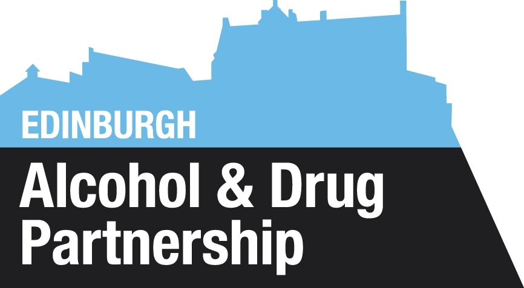
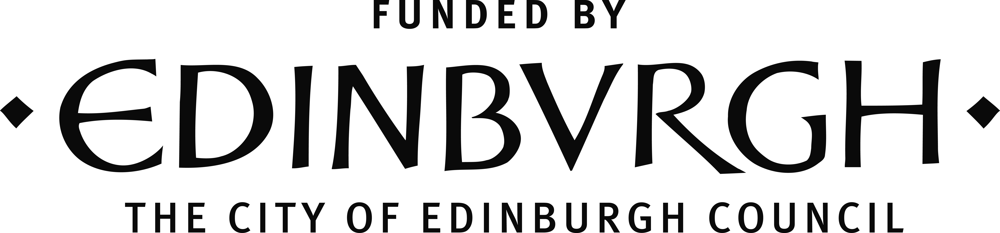
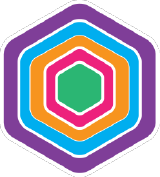
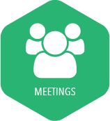
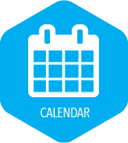
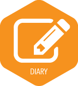
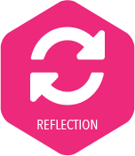
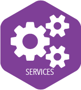
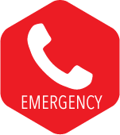

ARC Edinburgh was a winning entry in the 2014 Edinburgh apps competition. Since then we have been working hard with the recovery community to create a useful app to support them and others during recovery. This is our chance to say a big thank you to everyone involved for all of your time and contributions. Thanks for the cake too!
This app has been developed in close contact with City of Edinburgh Council and Edinburgh Alcohol and Drug Partnership. We make every effort to ensure that dates and times of support meeting or groups are up to date. This a prototype of ARC so please tell us if any of the information is wrong, or if you have any other feedback or suggestions.
You might notice that your calendar already has details of community events you may be interested in. We take this information from the Recovery Community Calendar. You can find the full Community Calendar online. Anyone can add events, so if you or someone you know wants to let the recovery community know, you can pop it in the Community Calendar. Once you do this, details of your event will show in the calendar of anyone with the ARC app! Cool huh?
Our community calendar has been created by JMB Technology Ltd and running costs are paid by the City of Edinburgh Council.


ARC-Edinburgh app has been developed for anyone in recovery from addiction to drugs or alcohol. ARC-Edinburgh brings together information and tools to help you access recovery services, organise your life and keep motivated to stay on track. Learn more about the features of ARC app and how to use them below.
Use the About You icon at the top of the screen to fill in some details about you.
You can add a picture of yourself, someone special or somewhere important (anything you like really), and it will show on the app's homescreen. You can also keep track of how long you have been in recovery by adding your 'start date' and choose whether to show this or not on your home screen. You can also add the details of the people who mean the most to you during recovery, friends or family you rely on when you need help or just a chat your Emergency Contacts.
 The Meetings button can help you find up to date information about all of the meetings (like AA, CA, NA or SMART) near you.
Press the Meetings Icon and you will see a map with pins showing the locations of all the meetings in the area. You can zoom in and navigate around the map to find a meeting near to you. Each pin shows the location for a meeting and clicking on it will open a bubble to get more information about the meeting - details like day, time, address and description of the meeting. You can even add the details of the meeting to your app's calendar by presing 'Add' in the top right of the screen. We have used colour to group meetings as either AA (purple), CA (orange), NA (blue) or SMART (pink), so you can tell quickly just by the colour of the pin what kind of meetings you are looking at. You can also use the 'Filter' option at the top right of the screen to show only the meetings you are interested in.
To make it even easier to find a meeting you can use the 'List' icon at the bottom right of the screen. This button sorts all of the meetings by day so you can look and see all of the meetings that run on a given day. These are also colour coded by type of meeting to help make searching even faster. You can then click on the coloured bar of a meeting to get full details about when and where it is and even add it to your Calendar. Pretty neat huh?
Go to the Calendar function to keep track of meetings, add appointments and learn about other events in your community
The Calendar shows you any meetings you have added using the Meetings function. You can also use the '+' symbol to add your own appointments to your Calendar. You will already see that we have sent you details of all the events in the Community Calendar (in blue), just tap the event and hit 'Add' at the top of the screen to change the colour of the entry to show you intend to go!
Each day entry shows any apointment or meeting you have in time order - making it easy to see if you have a busy or empty day. You can plan ahead by finding dates in month view. You can choose to 'Show' or 'Hide' the month view of the calendar (top right of screen). It's easy to navigate between months in month view by swiping left or right on the screen.
Keep track of progress, thoughts and feelings using the Diary function.
Just press 'New' (top right of screen), to add a new entry into your Diary. You can write a bit about your important day to day moments and experiences and even 'capture the moment' by adding a photo! Press 'save' to place the entry into your diary stream. As you add to your diary, the diary stream will keep track of your thoughts, feelings and memories on your recovery journey. Turn to your Diary to reflect on your progress as time passes.
 Use the Reflection function when you need an extra boost.
When you go to the Reflection section of the app you are asked to assess your mood. If you are 'Feeling good', ARC app will ask you to make a Diary entry to mark the good news. If you 'Want inspiration', you can read motivational quotes - just swipe down to see new quotes (there are plenty quotes to inspire you!). If you 'Need motivation', you can listen to one of the audio guided mindfulness exercises. Provided by Foundation for Positive Mental Health these 1, 4 or 11 minute exercises can help you to refocus. You can even use the code provided in the app to get more exercises! If you 'Need help', the app will take you to your Emergency function where you can call or even text your emergency contacts. To make it easier we have written the text for you, all you have to do is press 'text' then 'send'.
Use the Services function to find out what council services are available near you
It looks a lot like the Meetings section of the app, you can view local services by location using the 'Map', or via 'List'. Full details of the services, such as what they do, where they are, when they are open and how to contact them are all at your fingertips!
When your recovery is getting tough use the Emergency button to reach out for help.
Pressing Emergency brings up your list of emergency contacts (add emergency contacts in the About Me section). We know it can be difficult to reach out when you need help and we want to make it as easy as possible. Each name has the option to call or text next to it. Press 'Phone' to call your contact. Or you can choose to text them. Pressing 'Text' writes a text to your contact saying "I'm having a bad day. Can you call me?", you can edit this or just press send to reach out to others.
We want to be sure the information in ARC is correct, so we have included a feature to make it easy for you to Contact Us, the people who are running the app.
You can contact us to:
You can find everything you need to know about the app using the Information icon.
That includes information about who was involved in the development of the app, more details about us, and how to contact us. You can also find out how to access the Community Calendar from here.
The idea of the app is that it is for the recovery community to share information about events with others users. There are two ways to do this: